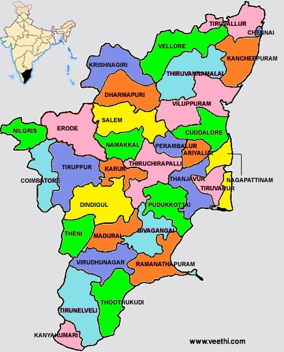

Tamil Nadu (/ˌtæmɪl ˈnɑːduː/; Tamil: [ˈtamiɻ ˈnaːɽɯ] ⓘ, abbr. TN) is the southernmost state of India. The tenth largest Indian state by area and the sixth largest by population, Tamil Nadu is the home of the Tamil people, who speak the Tamil language—the state's official language and one of the longest surviving classical languages of the world. The capital and largest city is Chennai. Located on the south-eastern coast of the Indian peninsula, Tamil Nadu is straddled by the Western Ghats and Deccan Plateau in the west, the Eastern Ghats in the north, the Eastern Coastal Plains lining the Bay of Bengal in the east, the Gulf of Mannar and the Palk Strait to the south-east, the Laccadive Sea at the southern cape of the peninsula, with the river Kaveri bisecting the state. Politically, Tamil Nadu is bound by the Indian states of Kerala, Karnataka, and Andhra Pradesh, and encloses a part of the union territory of Puducherry. It shares an international maritime border with the Northern Province of Sri Lanka at Pamban Island. Archaeological evidence points to Tamil Nadu being inhabited for more than 400 millennia, first by hominids[citation needed] and then by modern humans. The state has more than 5,500 years of continuous cultural history. Historically, the Tamilakam region was inhabited by Tamil-speaking Dravidian people, who were ruled by several regimes over centuries such as the Sangam era triumvirate of the Cheras, Cholas and Pandyas, the Pallavas (3rd–9th century CE), and the later Vijayanagara Empire (14th–17th century CE). European colonization began with establishing trade ports in the 17th century, with the British controlling much of the state as a part of the Madras Presidency for two centuries. After the Indian Independence in 1947, the region became the Madras State of the Republic of India and was further re-organized when states were redrawn linguistically in 1956 into its current shape. The state was renamed as Tamil Nadu, meaning "Tamil Country", in 1969. Hence, culture, cuisine and architecture have seen multiple influences over the years and have developed diversely. As of December 2023, Tamil Nadu had an economy with a gross state domestic product (GSDP) of ₹27.22 trillion (US$310 billion), making it the second-largest economy amongst the 28 states of India. It has the country's 9th-highest GSDP per capita of ₹315,220 (US$3,600) and ranks 11th in human development index. Tamil Nadu is also one of the most industrialised states, with the manufacturing sector accounting for nearly one-third of the state's GDP. With its diverse culture and architecture, long coastline, forests and mountains, Tamil Nadu is home to a number of ancient relics, historic buildings, religious sites, beaches, hill stations, forts, waterfalls and four World Heritage Sites. The state's tourism industry is the largest among the Indian states. The state has three biosphere reserves, mangrove forests, five National Parks, 18 wildlife sanctuaries and 17 bird sanctuaries. The Tamil film industry, nicknamed as Kollywood, plays an influential role in the state's popular culture
